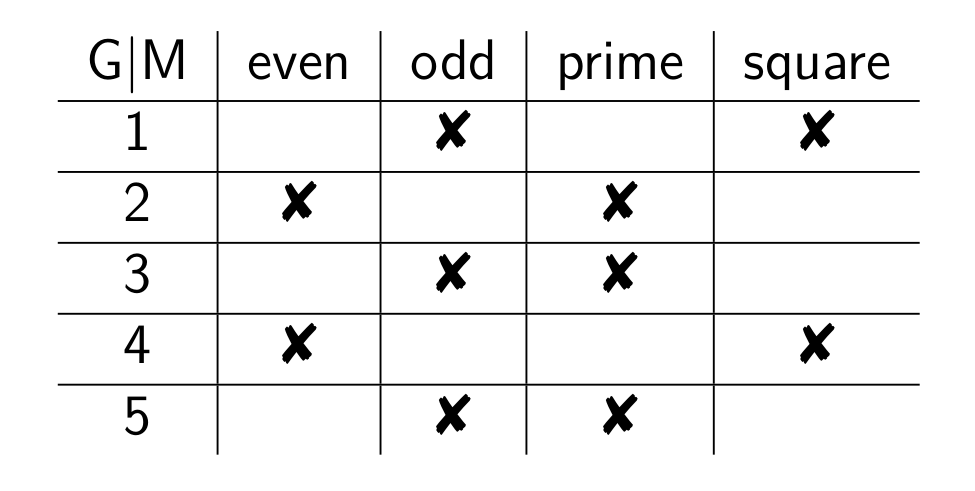
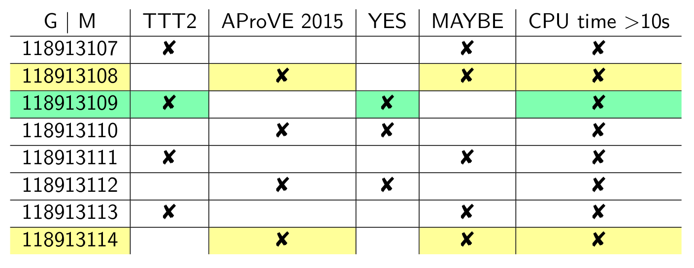

Erweiterung einer Haskell Web-Applikation um Analyse und Visualisierung mit
Formaler Begriffsanalyse
René Muhl | Betreuer: Prof. Waldmann
MA 7.1.-4.8.16 | MP im SS 15
Termination Competition
- Solver prüfen Benchmarks auf Termination
- Solver-Antwort: u.a. YES, MAYBE, NO
- Berechnung auf StarExec
- seit 2014 an der HTWK Leipzig
- Visualisierung durch Star-Exec-Presenter
##Star-Exec-Presenter
* Präsentation der Resultate von Terminationswettbewerben
* Implementation durch Prof. Waldmann und Masterarbeit von Stefan von der Krone
* Yesod (Haskell Web-Framework)
##Problematik
* Menge an Daten führt zu Unübersichtlichkeit
* größte Kategorie TRS Standard: 7 Solver, 1498 Benchmarks, 10486 Zellen
* jährliche Competitions
* Starten von eigenen Competitions (zur Entwicklung)
* aufwendige, manuelle Analyse der Resultate notwendig
* Welche Benchmarks hat mein Solver nicht gelöst?
##Anforderungen
1. Einschränkung der Datenmenge durch Filter
2. mehr Übersichtlichkeit, besserer Zugang zu Informationen
3. eine verbesserte Navigation (z.B.: durch ein Menü)
## Formale Begriffsanalyse
* von Rudolf Wille aus Ordnungstheorie definiert
* Data-Mining-Methode, zur Bestimmung von Klassen (Gegenstände mit gemeinsamen Merkmalen)
* Begriff kennzeichnet einen Gegenstand durch seine Merkmale
Formaler Kontext
$(G,M,R)$ ist formaler Kontext, mit:
$G$ Menge der Gegenstände, $M$ Menge der Merkmale, Relation $R \subseteq G \times M$

$G= \{1,2,3,4,5\}$, $M= \{even,odd,prime,square\}$,
$R= \{(1,odd),(1,square),(2,even),(2,prime),(3,odd), \\ (3,prime),(4,even),(4,square),(5,odd), (5,prime)\}$
Formaler Kontext
data Context ob at = Context
{ fore :: Map ob (Set at)
, back :: Map at (Set ob)
} deriving (Show)
-- get all objects of given context
objects :: (Ord at, Ord ob) => Context ob at -> Set ob
objects c = Map.keysSet $ fore c
-- get all attributes of given context
attributes :: (Ord at, Ord ob) => Context ob at -> Set at
attributes c = Map.keysSet $ back c
Projektionen
gemeinsame Merkmale der Gegenstände $A \subseteq G$:
$A' := \{ m \in M ~ | ~ \forall g \in A : (g,m) \in R \}$
Gegenstände, die alle Merkmale $B \subseteq M$ besitzen:
$B' := \{g \in G ~ | ~ \forall m \in B : (g,m) \in R \}$
- $A'= \{1\}' = \{odd,square\}$
- $B' = \{odd,square\}' = \{1\}$
Formaler Begriff
$(A,B)$ ist formaler Begriff des Kontextes $(G,M,R)$ mit:
- $A \subseteq G$ und $B \subseteq M$
- $A' = B$ und $A = B'$(Projektionen)
data Concept ob at = Concept
{ obs :: Set ob
, ats :: Set at
} deriving (Show, Eq)
Begriffsbestimmung
- $A \subseteq G$ wählen
- $A'$ (gemeinsame Merkmale) und $A''$ (Gegenstände mit allen Merkmalen) bestimmen
- wenn $A''$ = $A$, neuer Begriff $(A,A')$
-- determine all concepts of given context
concepts :: (Ord at, Ord ob) => Context ob at -> [Concept ob at]
concepts c = do
ats <- map Set.fromList $ subsequences $ Set.toList $ attributes c
guard $ ats == getAttributes c (getObjects c ats)
return (Concept (getObjects c ats) ats)
Formaler Begriff
- $A = \{1\} \subseteq G$
- $A'= \{odd,square\}$ -> $A''= \{odd,square\}' = \{1\}$
- da $A = A''$ -> neuer Begriff: $(A, A') = (\{1\}, \{odd, square\})$
Formaler Begriff
- $A= \{3\} \subseteq G$
- $A'= \{odd,prime\}$ -> $A''= \{odd,prime\}'= \{3,5\}$
- da $A \neq A''$ -> kein neuer Begriff
Anwendung Formale Begriffsanalyse
data Attribute =
ASolverBasename !Text
| AJobResultInfoSolver !Text
| AYearSpecificSolverName !Text
| AJobResultInfoConfiguration !Text
| ASlowCpuTime !Bool
| ASolverResult !SolverResult
| ABenchmarkNumberRules !(Maybe Bool)
| ABenchmarkLeftLinear !(Maybe Bool)
deriving (Eq, Ord, Show)
data Concept JobPairID Attribute = Concept
{ obs :: Set JobPairID
, ats :: Set Attribute
} deriving (Show, Eq)
Anwendung Formale Begriffsanalyse

- ({118913109}, {TTT2,YES,CPU time >10s})
- ({118913108, 118913114},{AProVE 2015,MAYBE,CPU time >10s})
Ergebnisse
neue Route mit:
- Formular zur Einschränkung des Formalen Kontextes (1.)
- Darstellung aller Begriffe durch Hasse-Diagramm (2.)
- Hasse-Diagramm-Interaktion durch Teilmenge, Komplement und Zoom (1.)
- Benchmark-Merkmale Anzahl Regeln, links-linear als weitere Filter-Optionen (zusätzlich)
- rudimentäres Menü (3.)
Zusammenfassung
Formale Begriffsanalyse:
- eignet sich zur Analyse von Resultat-Daten
- ist hilfreich zur Navigation durch Daten
- macht interessante Begriffe sichtbar
- ist eingeschränkt